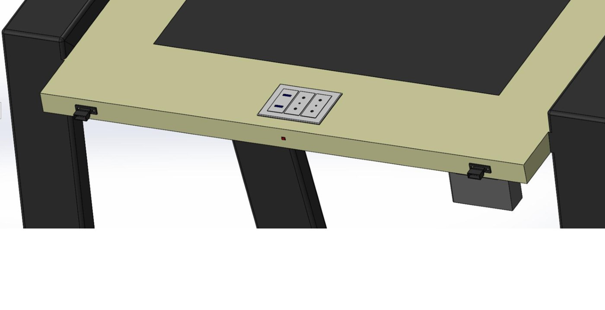
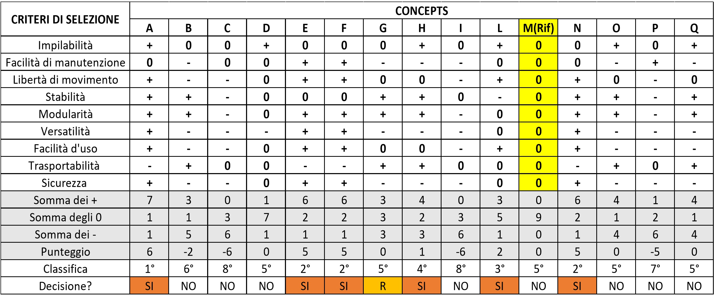

Il mio contributo
Ho partecipato direttamente a tutte le fasi insieme al gruppo: requisiti, questionario, QFD, concept, CAD e valutazioni economiche. Abbiamo lavorato attraverso brainstorming e sviluppo congiunto, senza suddividere le attività in incarichi individuali.
La sfida progettuale
Sviluppare un'alternativa alle sedute con tavolino integrato, con attenzione a ergonomia, modularità, alimentazione elettrica e libertà di movimento.
Metodo e decisioni
Dai bisogni alle specifiche
Il gruppo ha collegato questionario e bisogni alle metriche di progetto attraverso la House of Quality.
Selezionare un concept
Brainstorming, screening e scoring hanno guidato la scelta di una seduta regolabile con banco indipendente, poi sviluppata in CAD.
- Raccolta e classificazione dei bisogni, definizione delle metriche e delle specifiche obiettivo tramite House of Quality.
- Generazione di soluzioni e selezione mediante concept screening e scoring; definizione di architettura e interfacce.
- Rappresentazione dell'assieme in SolidWorks e stima dei costi di componenti, lavorazioni e assemblaggio.
Risultati
Il concept selezionato prevede banco indipendente, seduta regolabile, collegamenti fra unità e accessori modulari. La stima complessiva iniziale è di 170 euro per unità; lo scenario di produzione in serie ipotizza una riduzione del 30%, fino a 119 euro.


Limiti e sviluppi
Sviluppo concettuale e valutazione preliminare: i costi sono stime di progetto e non risultati di una produzione industriale avviata.
Immagini tratte dagli elaborati del team. I contributi personali sono riportati sulla base delle attività confermate dall’autore.